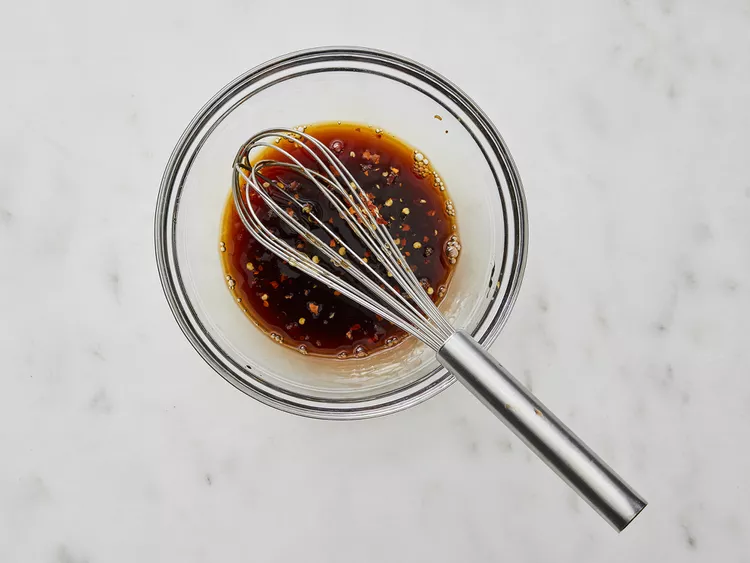
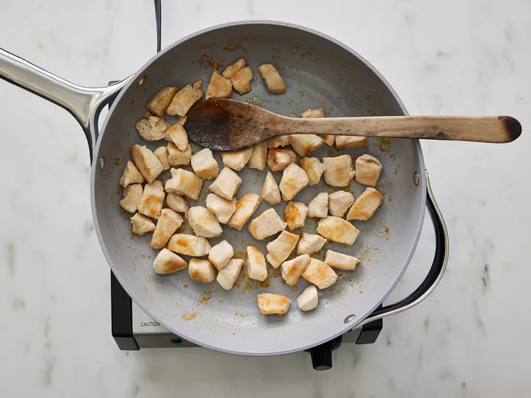
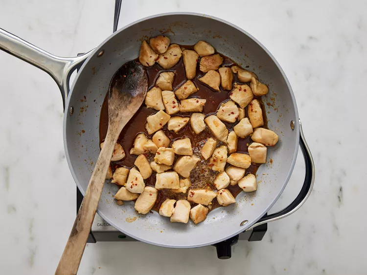

Honey Glazed Chicken

Description
Looking for a fast and tasty meal? This Honey Glazed Chicken is fast, simple,
and mighty delicious! It can be served with a side of Brocoli and steamed rice or,
if you're feeling a little lucky, with some Brocoli Beef and Chow-Mein. Whatever the
case, I hope you enjoy!
Ingredients
- 1/4 cup honey
- 2 tablespoons red pepper flakes
- 1 1/2 tablespoons olive oil
- 2 skinless, boneless chicken breast halves,
cut into bite-size pieces
Steps
- Gather all ingredients.
- Whisk honey, soy sauce, and red pepper flakes in a bowl; set aside.

- Heat olive oil in a skillet over medium heat; cook and stir chicken in hot
oil until lightly brown, about 5 minutes.

- Pour honey mixture into the skillet; continue to cook and stir until the chicken
is no longer pink in the center and sauce is thickened, about 5 minutes more.
